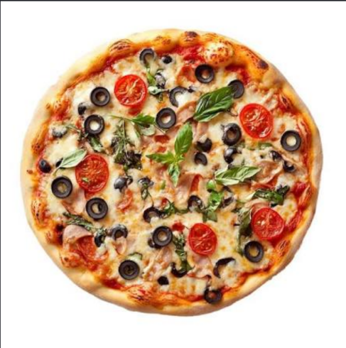

Pizza is a dish of Italian origin consisting of a usually round, flat base of leavened wheat-based dough topped with tomatoes, cheese, and often various other ingredients (such as anchovies, mushrooms, onions, olives, vegetables, meat, etc.), which is then baked at a high temperature, traditionally in a wood-fired oven. A small pizza is sometimes called a pizzetta.
Pizza is a dish of Italian origin consisting of a usually round, flat base of leavened wheat-based dough topped with tomatoes, cheese, and often various other ingredients (such as anchovies, mushrooms, onions, olives, vegetables, meat, etc.), which is then baked at a high temperature, traditionally in a wood-fired oven. A small pizza is sometimes called a pizzetta.
Neapolitan pizza is a traditional style of pizza that originated in Naples, Italy. It is known for its thin, soft, and chewy crust, which is made from simple ingredients like flour, water, yeast, and salt. The pizza is typically topped with fresh tomatoes, mozzarella cheese, fresh basil leaves, and a drizzle of olive oil. Neapolitan pizza is cooked at a high temperature in a wood-fired oven, resulting in a slightly charred and flavorful crust.

New York-style pizza is a popular style of pizza that originated in New York City. It is characterized by its large, thin, and foldable slices. The crust is typically hand-tossed and has a slightly crispy exterior with a soft and chewy interior. New York-style pizza is often topped with tomato sauce, mozzarella cheese, and various toppings such as pepperoni, mushrooms, or vegetables. It is commonly sold by the slice and is known for its convenience and delicious taste.

Chicago deep-dish pizza is a unique style of pizza that originated in Chicago, Illinois. It is known for its thick and buttery crust that is baked in a deep-dish pan, creating a high edge that allows for generous amounts of toppings. The pizza is typically layered with cheese, tomato sauce, and various ingredients such as sausage, pepperoni, or vegetables. Chicago deep-dish pizza is often eaten with a knife and fork due to its hearty and filling nature.

Sicilian pizza is a style of pizza that originated in Sicily, Italy. It is characterized by its thick, rectangular crust that is often topped with tomato sauce, cheese, and various ingredients such as anchovies, olives, or mushrooms. Sicilian pizza is typically baked in a shallow pan and is known for its crispy exterior and soft interior.

Margherita pizza is a classic Italian pizza that is named after Queen Margherita of Savoy. It is known for its simple yet delicious combination of ingredients, which represent the colors of the Italian flag. Margherita pizza typically consists of a thin crust topped with fresh tomatoes, mozzarella cheese, fresh basil leaves, and a drizzle of olive oil. The pizza is baked in a wood-fired oven, resulting in a flavorful and aromatic dish that is loved by many.

Hawaiian pizza is a controversial style of pizza that originated in Canada. It is known for its unique combination of sweet and savory flavors, as it typically features a topping of pineapple and ham. Hawaiian pizza is often made with a thin crust, tomato sauce, mozzarella cheese, and the signature pineapple and ham toppings. While some people enjoy the tropical twist that Hawaiian pizza offers, others believe that pineapple does not belong on pizza. Despite the debate, Hawaiian pizza has gained popularity worldwide and continues to be a favorite choice for many pizza lovers.